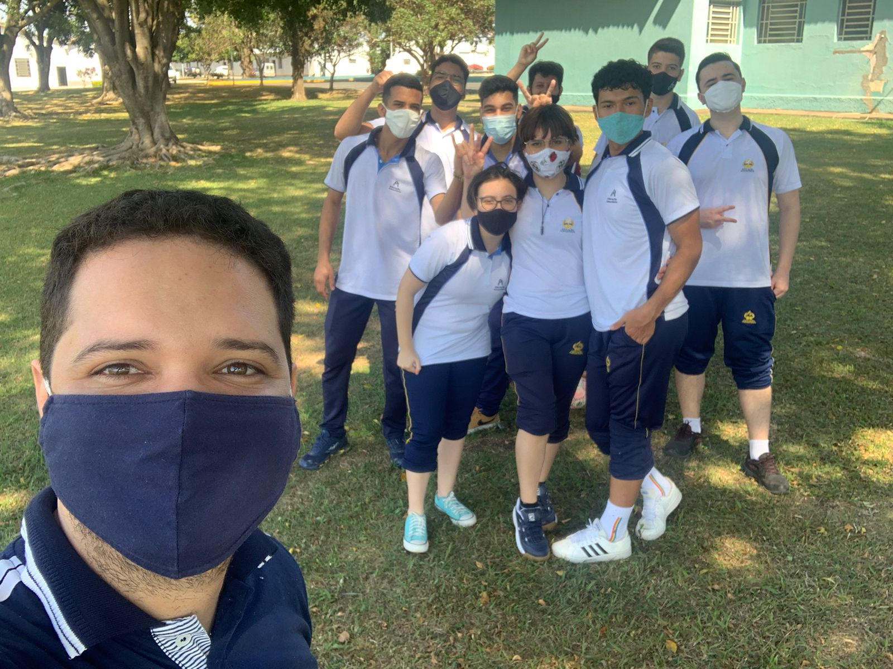

Mas, independentemente da circunstância que você esteja vivenciando agora, lembre-se você não está sozinho, Deus está contigo!
Assim como diz o profeta Isaias 41,10: “Por isso não tema, pois estou com você; Não tenha medo, pois sou o seu Deus. Eu o fortalecerei e o ajudarei; eu o segurarei com a minha mão direita vitoriosa”.
Um abraço do melhor segundo ano.
ass: 2ºT.I.A